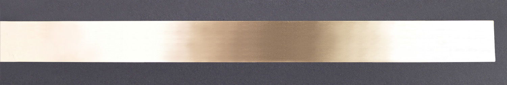
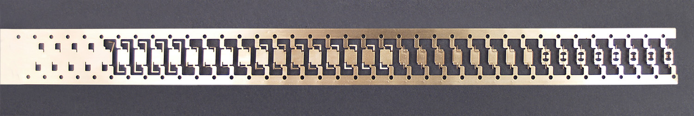
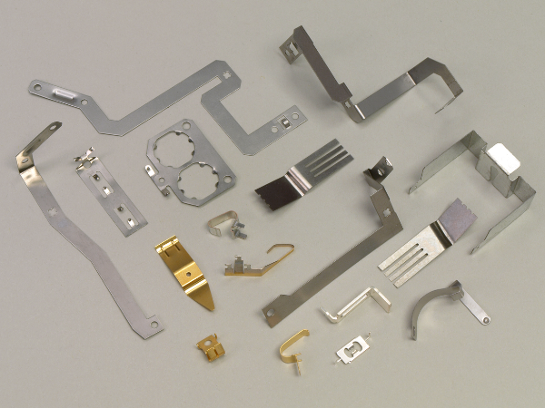

Custom Metal Stamping
Precision sheet metal and progressive die stampings handling strip material thicknesses from 0.003″ to 0.125″ and widths up to 12″.
Atlantic Precision Spring (APS)
Engineered precision from Bristol, CT. Delivering custom flat springs, battery contacts, and stampings with 65+ years of trusted manufacturing heritage.
Select your manufacturing process, material requirements, and target order quantity to rapidly build and submit your custom precision metal stamping RFQ. Tolerance, finish, or timing. This prepares a request and does not send a price.
Find the process you need, then send it into the quote builder.
Precision sheet metal and progressive die stampings handling strip material thicknesses from 0.003″ to 0.125″ and widths up to 12″.
High-efficiency fourslide tools and specialized machinery crafting custom micro stampings, complex shapes, and wire springs.
Custom-designed beryllium copper springs, flat leaf springs, small leaf springs, clip fasteners, and U-clips built to tight tolerances.
Custom electrical contacts, beryllium copper battery contacts, and specialty connectors engineered for optimal conductivity and durability.
Rapid prototyping using Wire EDM capabilities and standard tooling to bring your designs to market quickly without initial high permanent tool costs.
Since 1958, Atlantic Precision Spring has transformed raw metals into custom spring and stamping solutions from our Bristol, Connecticut facility. We pair time-tested craftsmanship with modern Wire EDM, SolidWorks design, and high-speed stamping technology to power leading American industries.



Trusted US-based manufacturing expertise operating out of Bristol, CT since 1958.
Rigorous quality control, SolidWorks engineering assistance, and full material traceability on every run.
Dedicated, direct communication from engineering to delivery, keeping your project on schedule and on budget.